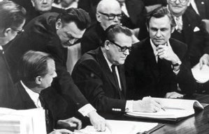
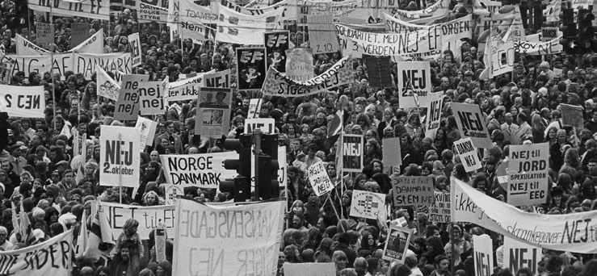
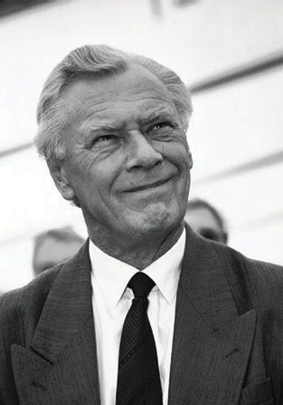
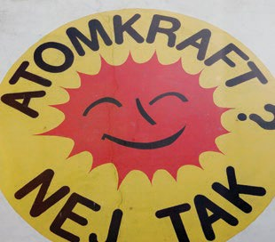

1.12 – DANMARK I EUROPA OG OLIEKRISE (1972-90)
sidde 50
Oliekrise (1972-90)
Danmark blev i 1973 medlem af Det Europæiske Fællesskab, EF, der var forløberen for det nuværende EU. I begyndelsen af 1970’erne blev Danmark efter mange år med god økonomi og vækst ligesom mange andre lande ramt af økonomisk krise. 1970’erne og 1980’erne blev en periode for Danmark med lav økonomisk vækst samt nye politiske partier og bevægelser.
DANMARKS MEDLEMSKAB AF EF
I 1958 indledte Frankrig, Italien, Tyskland og Benelux-landene (Belgien, Nederlandene og Luxembourg) et økonomisk samarbejde, som udviklede sig til Det Europæiske Fællesskab (EF) og siden hen til Den Europæiske Union (EU). Formålet med EF var at styrke handlen mellem medlemslandene og at sikre freden via et stærkt samarbejde. Derfor skulle der mellem EF-landene oprettes et fælles marked uden toldgrænser eller andre hindringer for den indbyrdes handel. Målet var også, at alle indbyggere frit skulle kunne søge og tage arbejde i andre EF-lande.
Den 1. januar 1973 trådte Danmark ind i EF. Et flertal på 63,3 procent af vælgerne havde sagt ja til medlemskab ved en folkeafstemning i oktober 1972. Op til afstem ningen var der megen debat om EF-spørgsmålet. Tilhængerne mente, at Danmark ville blive rigere ved at deltage i det økonomiske europæiske samarbejde. Man forven tede for det første, at Danmarks dengang vigtigste handelspartner, Storbritannien, også kom med i EF sammen med Danmark. Videre ønskede man at sikre de bedste muligheder for at handle på det europæiske marked og ikke mindst det tyske, hvis betydning for dansk økonomi var vokset kraftigt de forudgående år. Derudover var det en fordel at sikre dansk landbrug adgang til EF’s landbrugsstøtte. Modstanderne var imod, at Danmark opgav noget af sin ret til at bestemme selv, og var bange for, at de store lande ville komme til at bestemme for meget, samt at medlemskabet ville gå ud over den offentlige velfærd og den danske nationale identitet.Danmark bliver medlem af Det Europæiske Fællesskab (EF) i 1972. Statsminister Jens Otto Krag underskriver Romtraktaten i Bruxelles 22. januar 1972.
Danmark bliver medlem af Det Europæiske Fællesskab (EF) i 1972. Statsminister Jens Otto Krag underskriver Romtraktaten i Bruxelles 22. januar 1972.
Læremateriale Til Indfødsretsprøven

sidde 51
Hensynet til eksport og økonomi blev afgørende for det danske ja. Storbritannien og Irland blev medlemmer af EF samtidig med Danmark. I 1986 var der en ny folkeafstemning om en styrkelse af samarbejdet i EF. Afstemningen handlede om Den Europæiske Fællesakt eller EF-pakken, som den kom til at hedde i Danmark. Den havde til formål at gennemføre et indre marked, hvor varer, personer, tjenesteydelser og kapital kunne bevæge sig frit over grænserne mellem medlemslandene. Et flertal af danskerne (56,2 procent) stemte ja.Demonstration på
Demonstration på Rådhuspladsen mod Danmarks medlemskab af EF.
OLIEKRISE
I 1974 blev Danmark ligesom mange andre vestlige lande ramt af en økonomisk krise. Den blev udløst af, at priserne på olie steg voldsomt i 1973. Baggrunden var, at de arabiske lande øgede prisen markant på olie for at lægge pres på de vestlige lande, som støttede Israel i en krig mod Ægypten og Syrien (Yom Kippur-krigen).
Olie var helt afgørende for økonomien, da den skulle bruges i det meste af industrien, til biler og opvarmning af boliger. Danmark producerede dengang selv kun meget lidt olie, som derfor skulle købes i udlandet. Derfor gav prisstigningen alvorlige problemer i Danmark, som i forvejen havde underskud på samhandlen med udlandet. De forud gående års høje økonomiske vækst faldt betydeligt, priserne i butikkerne steg meget hurtigt, mange blev arbejdsløse, og overskuddet på statens budget blev vendt til et underskud.
Problemerne blev forværret og forlænget, da endnu en voldsom prisstigning på olie indtraf i 1979-80 på grund af uroligheder i Iran i forbindelse med den islamiske revolution og den efterfølgende krig mellem Iran og Irak. I løbet af 1980’erne faldt prisen på olie igen, fordi der blev udvundet mere olie uden for Mellemøsten, for eksempel i Nordsøen. Og fordi en del af verdens forbrug af olie blev udskiftet med andre former for energi, for eksempel naturgas, kul, atomkraft og i meget mindre omfang også vedvarende energikilder som vindkraft eller solenergi. Videre bidrog oliekriserne til at skabe en interesse for energibesparende tiltag som bedre isolering af boliger og udvikling af biler og elektronik (blandt andet tv-apparater, køleskabe og frysere), der bruger energien mere effektivt.
Læremateriale Til Indfødsretsprøven

sidde 52
POLITISK OPBRUD
1970’erne var også en periode med store politiske forandringer i Danmark. Mange vælgere protesterede mod høje skatter og mod det bureaukrati, der var fulgt med den store offentlige sektor i velfærdssamfundet, og vælgerne fik større mistillid til politikerne.
Ved folketingsvalget i 1973 stemte vælgerne pludseligt markant anderledes end tidligere. Der var tale om et stort vælgerskred, og dette valg kaldes derfor Jord skredsvalget.
Socialdemokratiet, Det Radikale Venstre, Venstre, Det Konservative Folkeparti og SF – de fem daværende partier i Folketinget – fik alle meget færre stemmer. Før Jordskredsvalget havde 93 procent af vælgerne stemt på et af de fem partier. Efter valget var det kun 64 procent.
Vælgerne stemte til gengæld fem partier mere ind i Folketinget, hvoraf det største blev protestpartiet Fremskridtspartiet, som fik 16 procent af stemmerne med advokaten Mogens Glistrup i spidsen. Partiets mærkesager var at afskaffe indkomstskat og offentligt bureaukrati. Mange af de gamle partiers vælgere vendte gradvis tilbage over de næste år, og ingen af de nye partier, som blev valgt i 1973, er længere i Folketinget.
Men Jordskredsvalget er en milepæl i dansk politisk historie, blandt andet fordi der i eftertiden har været valgt mellem 7 og 12 partier ind i Folketinget ved hvert valg (frem for typisk 5-6 før 1973). Selv om der løbende er opstået nye partier, har det dog altid været politikere fra enten Socialdemokratiet, Radikale Venstre, Det Konservative Folkeparti eller Venstre, som har været statsministre i Danmark siden Systemskiftet i 1901.
I 1970’erne forsøgte skiftende danske regeringer at vende den økonomiske nedtur, men uden meget held. I begyndelsen af 1980’erne havde Danmark et stort underskud på handelsbalancen, det vil sige forholdet mellem værdien af det Danmark køber og sælger i udlandet. Samtidig var omkring 10 procent af arbejdsstyrken uden arbejde. En vigtig årsag til den økonomiske krise var en stor gæld til udlandet.
Socialdemokratiet havde – kun med kortere afbrydelser – siddet i regering og haft statsministerposten det meste af tiden siden 1929. Men i 1982 overlod de – på grund af vanskeligheder med at løse de økonomiske problemer – regerings magten til den borgerlige fløj, uden at der havde været folketingsvalg. Stats ministeren blev den konservative Poul Schlüter, som var statsminister i over ti år frem til 1993.
Læremateriale Til Indfødsretsprøven
sidde 53
Poul Schlüter er den første og hidtil eneste statsminister fra Det Konserva tive Folkeparti. Det skyldes, at Venstre det meste af tiden har været det største borgerlige parti siden Systemskiftet i 1901 og derfor normalt har haft statsmini sterposten, når der efter 1901 har været borgerlige regeringer. Regeringsskiftet i 1982 er endvidere en historisk milepæl, fordi de borgerlige partier siden oftest har været ved magten. I perioden 1982-2022 sad de borgerlige partier Venstre og Det Konservative Folkeparti således tilsammen i regering og havde statsminister posten i sammenlagt 24 år og Socialdemokratiet i sammenlagt 16 år.
Det lykkedes efterhånden Schlüter-regeringen at forbedre den danske økonomi, navnlig i sidste halvdel af 1980’erne. Prisen var en rekordhøj ledighed i starten af 1990’erne. Men inflationen (prisstigningerne), som havde været et stort problem i 1970’erne, faldt, og fra 1990 var der overskud på handelsbalancen over for udlandet. Dermed kunne der komme gang i en sund økonomisk vækst. I den forbindelse hjalp det også, at Danmark blev mere selvforsynende med olie fra Nordsøen.
Schlüter-regeringen ophævede også DR’s monopol – det vil sige eneret – på at sende dansk tv, som DR havde haft siden den første danske tv-udsendelse i 1948. I 1986 blev det således tilladt for private at eje tv-kanaler, og samme år vedtog Folketinget at etablere TV2, som sendte første gang i 1988. I de følgende år voksede antallet af radio- og tv-kanaler i Danmark betyde ligt, og kabel- og satellit-tv med mange udenlandske kanaler blev en betydelig del af det danske mediebillede.Poul Schlüter var statsminister 1982-93.
Poul Schlüter var statsminister 1982-93.
Læremateriale Til Indfødsretsprøven

sidde 54
SOCIALE BEVÆGELSER
Efter at kvinderne var begyndt at komme ud på arbejdsmarkedet fra midten af 1960’erne, krævede mange kvinder i 1970’erne i forlængelse heraf mere lige stilling. For eksempel kæmpede kvinderne i rød-strømpebevægelsen gennem politiske aktioner for bedre vilkår for kvinder. Op gennem 1970’erne var ligestil ling et meget varmt politisk emne. I 1976 vedtog Folketinget på baggrund af et EF-direktiv en lov om lige løn for samme arbejde.
Fri adgang til abort var et andet af kvindebevægelsens politiske mål. Tidligere havde det kun været muligt at få abort, hvis der var en særlig grund til det, for eksempel hensynet til kvindens helbred. Men i 1973 vedtog Folketinget, at danske kvinder selv skulle kunne vælge, om de ville afbryde en graviditet. Indtil 12. graviditetsuge kunne kvinder frit vælge at få foretaget en abort. Modstanden mod den fri abort var en væsentlig grund til, at Kristeligt Folkeparti (som nu hedder Kristendemokraterne) blev dannet og valgt ind i Folketinget i 1973. Men den fri abort gælder stadigvæk, og i 2025 blev grænsen for fri abort hævet fra den 12. til den 18. graviditetsuge.
Flere græsrodsbevægelser var meget aktive i 1970’erne. Græsrodsbevægel serne var som regel grupper, der arbejdede for at opnå ét bestemt politisk mål. Fredsbevægelsen var aktiv i denne periode og arbejdede blandt andet mod militær oprustning og våbenkapløbet mellem stormagterne.
Tusindvis af danskere demonstrerede også mod atomkraft. Den folkelige modstand var en vigtig grund til, at Folketinget i 1985 besluttede at planlægge fremtidig energiforsyning i Danmark uden atomkraft. Ikke mindst en alvorlig ulykke på atomkraftværket Tjernobyl i Sovjetunionen (i det nuværende Ukraine) året efter i 1986 har haft stor betydning for eftertidens modvilje mod atomkraft.
De seneste års klimakrise og høje energipriser har dog skabt en fornyet poli tisk diskussion om, hvor vidt Danmark alligevel bør indføre atomkraft i en eller anden form, ligesom en større del af befolkningen er blevet mere positivt stemt over for atomkraft.Anti-atomkraftbevægelsen internationale kendetegn, som stammer fra den danske gren af bevægelsen.
Anti-atomkraftbevægelsen internationale kendetegn, som stammer fra den danske gren af bevægelsen.
Læremateriale Til Indfødsretsprøven

Fonte: Læremateriale til Indfødsretsprøven, SIRI.